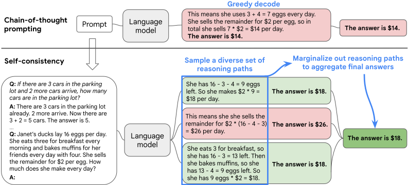
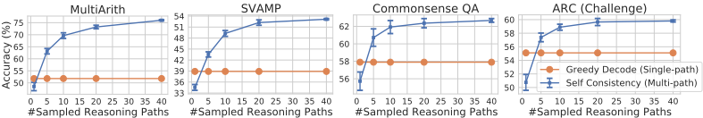
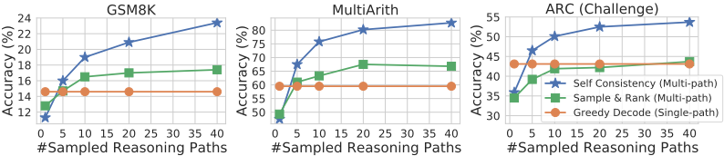
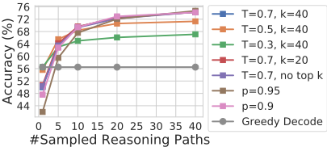
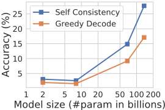
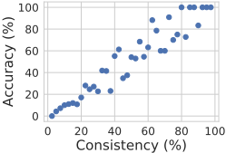
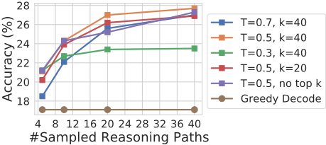
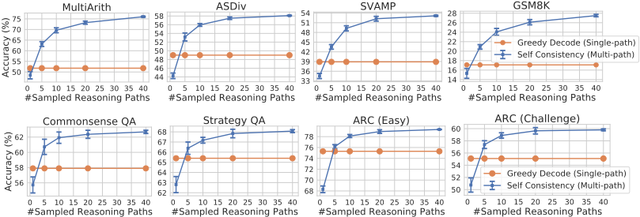
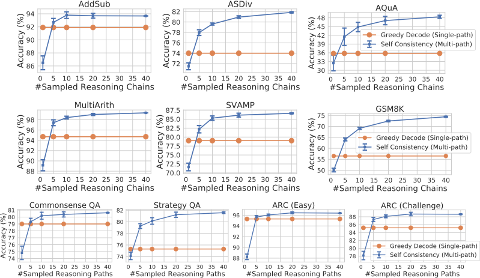

Self-Consistency 提升语言模型的 Chain-of-Thought 推理能力
论文针对 Chain-of-Thought (CoT) 提示中贪心解码易陷入重复与局部最优、单条推理路径出错即导致最终答案错误的问题，提出一种新的解码策略 self-consistency。方法分三步：先用 CoT exemplars 提示语言模型，再从解码器采样多条多样化的推理路径，最后对各路径解析出的最终答案做多数投票（对推理路径做 marginalize），选出最一致的答案；全程无监督、无需额外训练或人工标注，可直接用于现成预训练模型。在 UL2-20B、GPT-3-175B、LaMDA-137B、PaLM-540B 四个模型上的实验显示，GSM8K 绝对准确率提升 17.9%、SVAMP 提升 11.0%、AQuA 提升 12.2%、StrategyQA 提升 6.4%、ARC-challenge 提升 3.9%，并在多数任务上取得新 SoTA，同时显著优于 sample-and-rank、beam search 与各类集成方法。论文还发现采样路径的答案一致性与准确率高度相关，可作为模型的不确定性估计（'知道何时不知道'）。对团队而言，这是不训练模型即可大幅提升推理类任务可靠性的低成本手段，一致性信号还可直接用于产出质量监控与置信度评估。
Chain-of-Thought (CoT) 提示虽能提升多步推理能力，但其使用的贪心解码存在重复性与局部最优问题，且单条推理路径一旦出错就会导致最终答案错误。论文要解决的问题是：在不训练额外 verifier/re-ranker、不做微调、不增加人工标注的前提下，如何进一步提升 CoT 推理的准确率与可靠性。
提出 self-consistency 解码策略，包含三步：(1) 用人工编写的 CoT exemplars 提示语言模型；(2) 用 temperature sampling、topk sampling、nucleus sampling 等采样算法从解码器生成多条多样化的推理路径，替代贪心解码；(3) 对各路径解析出的最终答案做边际化（对答案集取多数投票 argmax），选出最一致的答案。方法完全无监督、即插即用，相当于在单一模型上的 'self-ensemble'；聚合时可按生成概率加权（实验表明未加权多数投票与归一化加权效果接近），并可与 zero-shot CoT 及其他集成策略组合使用。
相对 CoT 贪心解码的绝对准确率提升：GSM8K +17.9%、SVAMP +11.0%、AQuA +12.2%、StrategyQA +6.4%、ARC-challenge +3.9%
在 UL2-20B、GPT-3-175B、LaMDA-137B、PaLM-540B 四个模型上均显著提升，且模型规模越大增益越大（UL2-20B +3%-6%，LaMDA-137B/GPT-3 +9%-23%）
在算术推理任务上取得新 SoTA，常识/符号推理 6 个任务中 5 个取得 SoTA；GSM8K 上超过用 7.5k 样本微调 GPT-3 并附加 175B verifier 的方法
显著优于 sample-and-rank、beam search、prompt 顺序置换集成、多 prompt 集成以及多模型集成
对采样策略与参数（T、k、p）鲁棒；对不完美 prompt（推理路径中数字被随机替换）也能恢复性能（贪心解码下准确率 17.1 降至 14.9，self-consistency 可弥补差距）
采样路径数越多性能越好（1/5/10/20/40 条），但性能快速饱和，5 或 10 条即可获得大部分收益
答案一致性与准确率高度相关，可作为不确定性估计，即模型能 'know when it doesn't know'
对 zero-shot CoT 同样有效（+26.2%）；在 CoT 反而损害性能的 NLP 任务（ANLI-R1、e-SNLI、RTE）上，self-consistency 能反超 standard prompting
与需要训练额外 verifier（Cobbe et al., 2021）或基于人工标注训练 re-ranker（Thoppilan et al., 2022）的已有方法不同，self-consistency 完全无监督、无需额外训练/微调/标注数据；也不同于训练多个模型再聚合的典型 ensemble，它是在单一模型上的 'self-ensemble'。核心新意在于利用'复杂推理问题存在多条通向同一正确答案的推理路径'这一直觉，通过采样在解码阶段引入推理路径多样性，再对答案做边际化聚合，从而避免贪心解码的重复性与局部最优，同时缓解单次采样的随机性。
相关度级别：high
命中能力域：3.2 提示工程 | 3.5 评测与可靠使用
理由：论文直接命中 3.2 提示工程域中明确列出的'思维链/推理提示'技术：self-consistency 是构建在 CoT 提示之上的解码层增强，属于'把模型用好而非训练模型'的典型手段，无需微调即可落地。同时命中 3.5 评测与可靠使用域：论文证明一致性比例可作为不确定性估计用于产出质量监控，并系统讨论了计算成本与性能饱和的权衡（5-10 条路径即可获得大部分收益）、对不完美 prompt 与采样参数的鲁棒性。对团队构建代码生成与审查、测试辅助、知识库问答等可靠性敏感的工程自动化场景，这是低成本、高收益的可靠性提升手段，且其'采样-聚合'模式可直接嵌入现有 LLM 调用管线。
建议动作：深入精读并做内部分享
arXiv:2203.11171v4 [cs.CL] 7 Mar 2023
Xuezhi Wang †‡ Jason Wei † Dale Schuurmans † Quoc Le † Ed H. Chi Sharan Narang † Aakanksha Chowdhery † Denny Zhou †§ † Google Research，Brain 团队 ‡ xuezhiw@google.com , § dennyzhou@google.com
思维链（chain-of-thought, CoT）提示与预训练大型语言模型相结合，已在复杂推理任务上取得了令人鼓舞的成果。本文提出一种新的解码策略——自洽性（self-consistency），以替代思维链提示中所使用的朴素贪心解码。该方法首先采样一组多样化的推理路径，而不是仅采用贪心解码得到的那一条路径，然后通过对采样得到的推理路径进行边缘化，选出最一致的答案。自洽性利用了这样一种直觉：一个复杂的推理问题通常存在多种不同的思考方式，都能导向其唯一正确的答案。我们广泛的经验评估表明，自洽性在一系列流行的算术与常识推理基准测试（benchmark）上以显著的幅度提升了思维链提示的性能，包括 GSM8K（+17.9%）、SVAMP（+11.0%）、AQuA（+12.2%）、StrategyQA（+6.4%）和 ARC-challenge（+3.9%）。
尽管语言模型在一系列自然语言处理（NLP）任务中取得了显著的成功，但其展现推理的能力通常被视为一种局限，仅靠扩大模型规模无法克服（Rae et al., 2021; BIG-bench collaboration, 2021 等）。为解决这一不足，Wei et al. (2022) 提出了思维链（chain-of-thought, CoT）提示，即提示语言模型生成一系列短句，以模拟人在解决任务时可能采用的推理过程。例如，给定问题“如果停车场里有 3 辆车，又开来 2 辆车，停车场里有多少辆车？”，语言模型不会直接回答"5"，而是被提示以完整的思维链作答：“停车场里已经有 3 辆车。又开来 2 辆。现在有 3 + 2 = 5 辆车。答案是 5。”。据观察，思维链提示在多种多步推理任务上显著提升了模型性能（Wei et al., 2022）。
在本文中，我们提出了一种名为自洽性（self-consistency）的新型解码策略，用以替代思维链提示（Wei et al., 2022）中所使用的贪心解码策略，从而进一步大幅提升语言模型的推理性能。自洽性利用了这样一种直觉：复杂的推理任务通常存在多条能够得出正确答案的推理路径（Stanovich & West, 2000）。一个问题所需的深思熟虑与分析越多（Evans, 2010），能够推导出答案的推理路径的多样性就越大。
图 1 通过一个示例展示了自洽性方法。我们首先用思维链提示对语言模型进行提示，然后不再贪心地解码出最优推理路径，而是提出一种“采样-边缘化”（sample-and-marginalize）解码过程：我们首先从语言模型的解码器中采样，生成一组多样的推理路径；每条推理路径可能导向不同的最终答案，因此我们通过对采样得到的推理路径进行边缘化，在最终答案集合中找出最一致的答案，从而确定最优答案。这种方法类似于人类的经验：如果多种不同的思考方式都导向同一个答案，人们就会对最终答案的正确性更有信心。与其他解码方法相比，自洽性避免了困扰贪心解码的重复性和局部最优性，同时缓解了单次采样生成的随机性。
†

自洽性远比先前的方法简单，后者要么需要训练一个额外的验证器（verifier）（Cobbe et al., 2021），要么需要基于额外的人工标注来训练一个重排序器（re-ranker）以提升生成质量（Thoppilan et al., 2022）。与之相反，自洽性完全是无监督的，可直接开箱即用地应用于预训练语言模型，无需任何额外的人工标注，也避免了任何额外的训练、辅助模型或微调。自洽性也不同于典型的集成（ensemble）方法——即训练多个模型并聚合各模型的输出——它更像是一种作用于单个语言模型之上的“自集成”（self-ensemble）。
我们在四个不同规模的语言模型上，针对广泛的算术与常识推理任务对自洽性进行了评估：包括公开的 UL2-20B（Tay et al., 2022）和 GPT-3-175B（Brown et al., 2020），以及两个稠密激活的仅解码器（decoder-only）语言模型：LaMDA-137B（Thoppilan et al., 2022）和 PaLM-540B（Chowdhery et al., 2022）。在全部四个语言模型上，自洽性在所有任务上都以显著的幅度超越了思维链提示。特别地，当与 PaLM-540B 或 GPT-3 结合使用时，自洽性在算术推理任务上取得了新的最先进（state-of-the-art）性能水平，包括 GSM8K（Cobbe et al., 2021）（绝对准确率提升 +17.9%）、SVAMP（Patel et al., 2021）（+11.0%）、AQuA（Ling et al., 2017）（+12.2%），以及在常识推理任务上，如 StrategyQA（Geva et al., 2021）（+6.4%）和 ARC-challenge（Clark et al., 2018）（+3.9%）。在附加实验中，我们表明自洽性能够在那些相比标准提示而言加入思维链反而可能损害性能的 NLP 任务上稳健地提升性能（Ye & Durrett, 2022）。我们还表明，自洽性显著优于采样排序（sample-and-rank）、束搜索（beam search）以及基于集成的方法，并且对采样策略和不完美的提示具有鲁棒性。
人类的一个显著特点在于人们的思考方式各不相同。很自然可以设想，在需要深思熟虑的任务中，解决同一个问题很可能存在多种不同的途径。我们提出，这样的过程可以在语言模型中通过从语言模型的解码器进行采样来模拟。例如，如图 1 所示，对于一个数学问题，模型可以生成多个看似合理的回答，并且都得出同一个正确答案（输出 1 和输出 3）。由于语言模型并非完美的推理器，模型也可能产生错误的推理路径，或在某个推理步骤中出错（例如输出 2），但这类解答得出相同答案的可能性较小。也就是说，我们假设正确的推理过程即使各不相同，其最终答案也往往比错误的推理过程具有更大的一致性。
我们利用这一直觉，提出了以下自洽性（self-consistency）方法。首先，使用一组人工编写的思维链（chain-of-thought, CoT）示例对语言模型进行提示（Wei et al., 2022）。接着，我们从语言模型的解码器中采样一组候选输出，生成多样化的候选推理路径集合。自洽性与大多数现有的采样算法兼容，包括 temperature sampling（Ackley et al., 1985; Ficler & Goldberg, 2017）、top-k sampling（Fan et al., 2018; Holtzman et al., 2018; Radford et al., 2019）以及 nucleus sampling（Holtzman et al., 2020）。最后，我们通过对采样得到的推理路径进行边缘化来聚合答案，并选择在生成的答案中最为一致的答案。
| GSM8K | MultiArith | AQuA | SVAMP | CSQA | ARC-c | |
|---|---|---|---|---|---|---|
| Greedy decode | 56.5 | 94.7 | 35.8 | 79.0 | 79.0 | 85.2 |
| Weighted avg (unnormalized) | 56.3 ± 0.0 | 90.5 ± 0.0 | 35.8 ± 0.0 | 73.0 ± 0.0 | 74.8 ± 0.0 | 82.3 ± 0.0 |
| Weighted avg (normalized) | 22.1 ± 0.0 | 59.7 ± 0.0 | 15.7 ± 0.0 | 40.5 ± 0.0 | 52.1 ± 0.0 | 51.7 ± 0.0 |
| Weighted sum (unnormalized) | 59.9 ± 0.0 | 92.2 ± 0.0 | 38.2 ± 0.0 | 76.2 ± 0.0 | 76.2 ± 0.0 | 83.5 ± 0.0 |
| Weighted sum (normalized) | 74.1 ± 0.0 | 99.3 ± 0.0 | 48.0 ± 0.0 | 86.8 ± 0.0 | 80.7 ± 0.0 | 88.7 ± 0.0 |
| Unweighted sum (majority vote) | 74.4 ± 0.1 | 99.3 ± 0.0 | 48.3 ± 0.5 | 86.6 ± 0.1 | 80.7 ± 0.1 | 88.7 ± 0.1 |
| | GSM8K | MultiArith | AQuA | SVAMP | CSQA | ARC-c |
更详细地说，假设生成的答案 a i 来自一个固定的答案集合，即 a i ∈ A ，其中 i = 1 , . . . , m 为从解码器采样得到的 m 个候选输出的索引。给定一个提示和一个问题，自洽性引入了一个额外的隐变量 r i ，它是一个表示第 i 个输出中推理路径的词元（token）序列，然后将 ( r i , a i ) 的生成耦合在一起，其中 r i → a i ，也就是说，生成推理路径 r i 是可选的，仅用于得出最终答案 a i 。例如，考虑图 1 中的输出 3：开头几句 ' She eats 3 for breakfast ... So she has 9 eggs * $2 = $18. ' 构成了 r i ，而最后一句 ' The answer is $18 ' 中的答案 18 则被解析为 a i 。1 在从模型的解码器采样出多个 ( r i , a i ) 之后，自洽性通过对 a i 取多数投票来对 r i 进行边缘化，即 arg max a ∑ m i =1 ✶ ( a i = a ) ，也就是如我们所定义的，最终答案集合中最“一致”的答案。
在表 1 中，我们展示了在一组推理任务上使用不同答案聚合策略所得到的测试准确率。除了多数投票之外，在聚合答案时还可以用 P ( r i , a i | prompt , question ) 对每个 ( r i , a i ) 进行加权。注意，在计算 P ( r i , a i | prompt , question ) 时，我们既可以取模型在给定 ( prompt , question ) 的条件下生成 ( r i , a i ) 的未归一化概率，也可以按输出长度对条件概率进行归一化（Brown et al., 2020），即：
其中，log P ( t k | prompt , question , t 1 , . . . , t k - 1 ) 是在给定先前 token 的条件下生成 ( r i , a i ) 中第 k 个 token t k 的对数概率，K 是 ( r i , a i ) 中的 token 总数。在表 1 中，我们表明，采用“未加权和”（即直接对 a i 进行多数投票）所得到的准确率与使用“归一化加权和”进行聚合所得到的准确率非常接近。我们进一步仔细考察了模型的输出概率，发现这是因为对于每个 ( r i , a i )，归一化后的条件概率 P ( r i , a i | prompt , question ) 彼此都相当接近，也就是说，语言模型认为这些生成结果“具有相近的可能性”。2 此外，在聚合答案时，表 1 中的结果表明，“归一化”加权和（即公式 1）相比其未归一化的对应方法能得到高得多的准确率。为完整起见，我们在表 1 中还报告了采用“加权平均”的结果，即每个 a 的得分为其加权和除以 ∑ m i =1 ( a i = a )，这会导致性能差得多。
✶ 自洽性探索了介于开放式文本生成与具有固定答案的最优文本生成之间的一个有趣空间。推理任务通常具有固定的答案，这也是研究人员普遍考虑贪心解码方法的原因（Radford et al., 2019; Wei et al., 2022; Chowdhery et al., 2022）。然而，我们发现即使目标答案是固定的，在推理过程中引入多样性也可能大有益处；因此，我们利用通常用于开放式文本生成的采样方法（Radford et al., 2019; Brown et al., 2020; Thoppilan et al., 2022）来实现这一目标。需要注意的是，自洽性只能应用于最终答案取自固定答案集的问题；但原则上，如果能够在多个生成结果之间定义出良好的一致性度量（例如判断两个答案是一致还是相互矛盾），该方法可以扩展到开放文本生成问题。
1 解析器与具体任务相关。对于算术推理，在模型生成 'The answer is ' 之后，我们将第一个数值部分解析为最终答案。对于常识推理，在模型生成 'The answer is ' 之后，我们将完整的字符串答案解析为最终答案。如果我们以这种格式提示语言模型，大多数生成的输出都具有 '{Reasoning paths}. The answer is X.' 这样一致的格式。
2 这也意味着语言模型的校准不佳，因而无法很好地区分正确的解与错误的解，这也解释了为什么在先前的工作（Cobbe et al., 2021; Thoppilan et al., 2022）中需要训练额外的重排序器（re-ranker）来更好地评判解的质量。
3
我们进行了一系列实验，在多个推理基准测试（benchmark）上将所提出的自一致性（self-consistency）方法与现有方法进行比较。我们发现，对于所考察的每一个语言模型，自一致性都能稳健地提升推理准确率，这些模型涵盖了广泛的模型规模。
任务与数据集。我们在以下推理基准测试（benchmark）上评估自一致性。3
语言模型与提示。我们在四个不同规模的基于 Transformer 的语言模型上评估自一致性：
我们在少样本（few-shot）设置下进行所有实验，不对语言模型进行任何训练或微调。为了公平比较，我们使用与 Wei et al. (2022) 相同的提示：对于所有算术推理任务，我们使用同一组 8 个人工编写的示例；对于每个常识推理任务，从训练集中随机选取 4-7 个示例，并配以人工编写的思维链（chain-of-thought, CoT）提示。6 所用提示的完整细节见附录 A.3。
采样方案。为了采样出多样化的推理路径，我们采用了与 Radford et al. (2019)；Holtzman et al. (2020) 针对开放文本生成所建议的类似设置。具体而言，对于 UL2-20B 和 LaMDA-137B，我们采用温度采样，T = 0.5，并截断至概率最高的 topk（k = 40）个词元；对于 PaLM-540B，我们采用 T = 0.7、k = 40；对于 GPT-3，我们使用 T = 0.7 且不做 topk 截断。我们在第 3.5 节中提供了一项消融实验，以表明自一致性对采样策略和参数总体上是稳健的。
3 默认情况下，若标签可用于评估，我们对所有数据集均使用测试集划分（test split）。对于 CommonsenseQA，我们使用开发集划分（dev split）；对于 StrategyQA，我们使用来自 BIG-bench collaboration (2021) 的仅问题集：https://github.com/google/BIG-bench/tree/main/bigbench/benchmark_tasks/strategyqa 。
4 模型检查点见 https://github.com/google-research/google-research/tree/master/ul2 。
5 公开 API 见 https://openai.com/api/ 。
6 自一致性对不同的提示集合是稳健的，我们在附录 A.1.2 中提供了一项相关研究。
我们报告了自一致性在 10 次运行上取平均的结果，其中每次运行均从解码器独立采样 40 个输出。我们所对比的基线是采用贪心解码的思维链（chain-of-thought, CoT）提示（Wei et al., 2022），记为 CoT-prompting，该方法此前已被用于大语言模型的解码（Chowdhery et al., 2022）。
算术推理 结果如表 2 所示。7 相对于思维链提示，自一致性在所有四个语言模型上都显著提升了算术推理性能。更令人惊讶的是，随着语言模型规模的增大，增益变得更加显著，例如，在 UL2-20B 上我们观察到 +3%-6% 的绝对准确率提升，而在 LaMDA137B 和 GPT-3 上则为 +9%-23%。对于那些已经在大多数任务上取得较高准确率的更大模型（例如 GPT-3 和 PaLM-540B），自一致性仍带来显著的额外增益：在 AQuA 和 GSM8K 等任务上绝对准确率提升 +12%-18%，在 SVAMP 和 ASDiv 上提升 +7%-11%。借助自一致性，我们几乎在所有任务上都取得了新的最先进（state-of-the-art, SoTA）结果：尽管自一致性是无监督且任务无关的，这些结果与那些需要任务特定训练、或需要用数千个样本进行微调的现有方法（例如在 GSM8K 上）相比也毫不逊色。
| Method.Previous SoTA | AddSub.94.9 a | MultiArith.60.5 a | ASDiv.75.3 b | AQuA.37.9 c | SVAMP.57.4 d | GSM8K.35 e / 55 g | |
|---|---|---|---|---|---|---|---|
| UL2-20B | CoT-prompting Self-consistency | 18.2 24.8 (+6.6) | 10.7 15.0 (+4.3) | 16.9 21.5 (+4.6) | 23.6 26.9 (+3.3) | 12.6 19.4 (+6.8) | 4.1 7.3 (+3.2) |
| LaMDA-137B | CoT-prompting Self-consistency | 52.9 63.5 (+10.6) | 51.8 75.7 (+23.9) | 49.0 58.2 (+9.2) | 17.7 26.8 (+9.1) | 38.9 53.3 (+14.4) | 17.1 27.7 (+10.6) |
| PaLM-540B | CoT-prompting Self-consistency | 91.9 93.7 (+1.8) | 94.7 99.3 (+4.6) | 74.0 81.9 (+7.9) | 35.8 48.3 (+12.5) | 79.0 86.6 (+7.6) | 56.5 74.4 (+17.9) |
| GPT-3 Code-davinci-001 | CoT-prompting Self-consistency | 57.2 67.8 (+10.6) | 59.5 82.7 (+23.2) | 52.7 61.9 (+9.2) | 18.9 25.6 (+6.7) | 39.8 54.5 (+14.7) | 14.6 23.4 (+8.8) |
| GPT-3 | CoT-prompting | 89.4 (+2.2) | 96.2 (+3.8) | 80.1 87.8 (+7.6) | 39.8 52.0 (+12.2) | 75.8 86.8 (+11.0) | 60.1 78.0 (+17.9) |
| Code-davinci-002 | Self-consistency | 91.6 | 100.0 |
| | Method.Previous SoTA | AddSub.94.9 a | MultiArith.60.5 a | ASDiv.75.3 b | AQuA.37.9 c | SVAMP.57.4 d | GSM8K.35 e / 55 g |
| Method.Previous SoTA | CSQA.91.2 a | StrategyQA.73.9 b | ARC-e.86.4 c | ARC-c.75.0 c | Letter (4).N/A | Coinflip (4).N/A | |
|---|---|---|---|---|---|---|---|
| UL2-20B | CoT-prompting Self-consistency | 51.4 55.7 (+4.3) | 53.3 54.9 (+1.6) | 61.6 69.8 (+8.2) | 42.9 49.5 (+6.8) | 0.0 0.0 (+0.0) | 50.4 50.5 (+0.1) |
| LaMDA-137B | CoT-prompting Self-consistency | 57.9 63.1 (+5.2) | 65.4 67.8 (+2.4) | 75.3 79.3 (+4.0) | 55.1 59.8 (+4.7) | 8.2 8.2 (+0.0) | 72.4 73.5 (+1.1) |
| PaLM-540B | CoT-prompting Self-consistency | 79.0 80.7 (+1.7) | 75.3 81.6 (+6.3) | 95.3 96.4 (+1.1) | 85.2 88.7 (+3.5) | 65.8 70.8 (+5.0) | 88.2 91.2 (+3.0) |
| GPT-3 Code-davinci-001 | CoT-prompting Self-consistency | 46.6 54.9 (+8.3) | 56.7 61.7 (+5.0) | 63.1 72.1 (+9.0) | 43.1 53.7 (+10.6) | 7.8 10.0 (+2.2) | 71.4 75.9 (+4.5) |
| GPT-3 Code-davinci-002 | CoT-prompting Self-consistency | 79.0 81.5 (+2.5) | 73.4 79.8 (+6.4) | 94.0 96.0 (+2.0) | 83.6 87.5 (+3.9) | 70.4 73.4 (+3.0) | 99.0 99.5 (+0.5) |
| | Method.Previous SoTA | CSQA.91.2 a | StrategyQA.73.9 b | ARC-e.86.4 c | ARC-c.75.0 c | Letter (4).N/A | Coinflip (4).N/A |
7 自一致性在所有任务上的标准差均 ≤ 0.5，因此在表中省略。关于不同采样路径数量下的标准差，请参见图 2 以及图 7 和图 8。
常识推理与符号推理 表 3 给出了常识推理与符号推理任务上的结果。类似地，自一致性在所有四个语言模型上都带来了大幅增益，并在 6 个任务中的 5 个上取得了 SoTA 结果。对于符号推理，我们测试了分布外（out-of-distribution, OOD）设定，其中输入提示包含 2-letters 或 2-flips 的示例，但我们测试的是 4-letters 和 4-flips 的示例（这一设定更具挑战性，因为 PaLM-540B 或 GPT-3 在分布内已能达到完美的准确率）。在这一具有挑战性的 OOD 设定下，只要模型规模足够大，自一致性相对于 CoT-prompting 的增益仍然相当显著。
为了展示采样推理路径数量所带来的影响，我们在图 2 中绘制了准确率（10 次运行的均值和标准差）随采样路径数量（1、5、10、20、40）变化的曲线。结果表明，采样更多数量（例如 40 条）的推理路径会带来始终更优的性能，这进一步凸显了在推理路径中引入多样性的重要性。在表 4 中，我们通过来自两个任务的若干示例问题展示了：与贪心解码相比，自一致性能够产生更丰富的推理路径集合。

| GSM8K | StrategyQA | |
|---|---|---|
| Question | Henry made two stops during his 60-mile bike trip. He first stopped after 20 miles. His second stop was 15 miles before the end of the trip. How many miles did he travel between his first and second stops? | Yes or no: Is Albany, Georgia the most populous US Albany? |
| Greedy Decode | He traveled 60 miles in total. He stopped after 20 miles, so he traveled 60 - 20 = 40 miles between the first and second stops. The answer is 40. | Albany, Georgia is the most populous US Al- bany. Thus, the answer is yes. |
| Sampled Path 1 | Henry travelled a total of 60 miles. His first stop was 20 miles in, and his second stop was 15 miles before the end. So between his first and second stops he travelled 60 - 20 -15 = 25 miles. The answer is 25. | The most populous US Albany is Albany, New York. Thus, Albany, Georgia is not the most populous US Albany. So the answer is no. |
| Sampled Path 2 | He made two stops during a 60-mile trip. The first was 20 miles into the trip. The second was 15 miles before the end of the trip. This means the second stop was 60 - 15 = 45 miles into the trip. Since he made the stops in order, the second stop must have been 45 - 20 = 25 miles after the first stop. The answer is 25. | Albany, Georgia has a population of about 88,000. Albany, New York has a population of about 95,000. Thus, Albany, Georgia is not the most populous US Albany. So the answer is no. |
| | GSM8K | StrategyQA |
Ye & Durrett (2022) 的研究表明，在少样本上下文学习（in-context learning）中，与标准提示（standard prompting）相比，思维链（chain-of-thought, CoT）提示有时反而会损害性能。在此，我们开展了一项使用自一致性的研究，以检验其能否帮助弥补这一差距，研究对象为一组常见的自然语言处理（NLP）任务，包括：(1) 闭卷问答（Closed-Book Question Answering）：BoolQ (Clark et al., 2019)、HotpotQA (Yang et al., 2018)；以及 (2) 自然语言推理（Natural Language Inference）：e-SNLI (Camburu et al., 2018)、ANLI (Nie et al., 2020) 和 RTE (Dagan et al., 2005; Bar-Haim et al., 2006; Giampiccolo et al., 2007; Bentivogli et al., 2009)。
在 PaLM-540B 上的结果如表 5 所示。对于某些任务（例如 ANLI-R1、e-SNLI、RTE），与标准提示 (Brown et al., 2020) 相比，加入思维链确实会损害性能，但自一致性能够稳健地提升性能并超越标准提示，这使其成为在常见 NLP 任务的少样本上下文学习中引入推理依据（rationale）的一种可靠方式。
| ANLI R1 / R2 / R3 | e-SNLI | RTE | BoolQ | HotpotQA (EM/F1) | |
|---|---|---|---|---|---|
| Standard-prompting (no-rationale) | 69.1 / 55.8 / 55.8 | 85.8 | 84.8 | 71.3 | 27.1 / 36.8 |
| CoT-prompting (Wei et al., 2022) | 68.8 / 58.9 / 60.6 | 81 | 79.1 | 74.2 | 28.9 / 39.8 |
| Self-consistency | 78.5 / 64.5 / 63.4 | 88.4 | 86.3 | 78.4 | 33.8 / 44.6 |
| | ANLI R1 / R2 / R3 | e-SNLI | RTE | BoolQ | HotpotQA (EM/F1) |
6
我们进行了一系列额外的研究，结果表明自一致性显著优于现有方法，包括采样排序（sample-and-rank）、束搜索（beam search）以及基于集成的方法（ensemble-based approaches）。
与采样排序的比较 一种常用的提升生成质量的方法是采样排序，即从解码器中采样多条序列，然后根据每条序列的对数概率进行排序（Adiwardana et al., 2020）。我们在 GPT-3 code-davinci-001 上将自一致性与采样排序进行比较，具体做法是从解码器中采样与自一致性相同数量的序列，并从排名最高的序列中取最终答案。结果如图 3 所示。虽然采样排序确实通过额外采样序列并进行排序提升了准确率，但与自一致性相比，其增益要小得多。

与束搜索的比较 在表 6 中，我们在 UL2-20B 模型上将自一致性与束搜索解码进行比较。为了公平比较，我们在束数量和推理路径数量相同的条件下报告准确率。在这两个任务上，自一致性都显著优于束搜索。请注意，自一致性也可以采用束搜索来解码每条推理路径（结果以“Self-consistency using beam search”形式给出），但其性能比采用采样的自一致性更差。原因在于束搜索产生的输出多样性较低（Li & Jurafsky, 2016），而在自一致性中，推理路径的多样性正是取得更好性能的关键。
| Beam size / Self-consistency paths | 1 | 5 | 10 | 20 | 40 | |
|---|---|---|---|---|---|---|
| AQuA | Beam search decoding (top beam) | 23.6 23.6 | 19.3 | 16.1 | 15.0 | 10.2 |
| Self-consistency using beam search | 19.8 ± 0.3 | 21.2 ± 0.7 | 24.6 ± 0.4 | 24.2 ± 0.5 | ||
| Self-consistency using sampling | 19.7 ± 2.5 | 24.9 ± 2.6 | 25.3 ± 1.8 | 26.7 ± 1.0 | 26.9 ± 0.5 | |
| MultiArith | Beam search decoding (top beam) | 10.7 | 12.0 | 11.3 | 11.0 | 10.5 |
| MultiArith | Self-consistency using beam search | 10.7 | 11.8 ± 0.0 | 11.4 ± 0.1 | 12.3 ± 0.1 | 10.8 ± 0.1 |
| MultiArith | Self-consistency using sampling | 9.5 ± 1.2 | 11.3 ± 1.2 | 12.3 ± 0.8 | 13.7 ± 0.9 | 14.7 ± 0.3 |
| | Beam size / Self-consistency paths | 1 | 5 | 10 | 20 | 40 |
与基于集成的方法的比较 我们进一步将自一致性与用于少样本学习的集成方法进行比较。具体而言，我们考虑以下集成方式：(1) 提示顺序置换：我们将提示中的示例随机打乱 40 次，以缓解模型对提示顺序的敏感性（Zhao et al., 2021; Lu et al., 2021）；(2) 多组提示（Gao et al., 2021）：我们手动编写 3 组不同的提示。在这两种方法中，我们都对贪心解码得到的答案进行多数投票作为集成。表 7 表明，与自一致性相比，现有的基于集成的方法所获得的增益要小得多。8 此外，请注意自一致性不同于典型的模型集成（model-ensemble）方法，后者需要训练多个模型并聚合其输出。自一致性更像是在单个语言模型之上的一种“自集成”（self-ensemble）。我们还在附录 A.1.3 中展示了集成多个模型的结果，其中模型集成的表现远差于自一致性。
| GSM8K | MultiArith | SVAMP | ARC-e | ARC-c | |
|---|---|---|---|---|---|
| CoT (Wei et al., 2022) | 17.1 | 51.8 | 38.9 | 75.3 | 55.1 |
| Ensemble (3 sets of prompts) | 18.6 ± 0.5 | 57.1 ± 0.7 | 42.1 ± 0.6 | 76.6 ± 0.1 | 57.0 ± 0.2 |
| Ensemble (40 prompt permutations) | 19.2 ± 0.1 | 60.9 ± 0.2 | 42.7 ± 0.1 | 76.9 ± 0.1 | 57.0 ± 0.1 |
| Self-Consistency (40 sampled paths) | 27.7 ± 0.2 | 75.7 ± 0.3 | 53.3 ± 0.2 | 79.3 ± 0.3 | 59.8 ± 0.2 |
| | GSM8K | MultiArith | SVAMP | ARC-e | ARC-c |
8 自一致性与这两种集成方法均兼容，我们在附录 A.1.4 中展示结果。
我们进行了若干额外的实验，以分析自一致性方法的不同方面，包括其对采样策略和参数的鲁棒性，以及它如何在不完美提示（imperfect prompts）和非自然语言推理路径下工作。
**自一致性对采样策略和规模扩展具有鲁棒性** 我们通过在 PaLM-540B 上改变温度采样（temperature sampling）中的 T (Ackley et al., 1985; Ficler & Goldberg, 2017)、top-k 采样中的 k (Fan et al., 2018; Holtzman et al., 2018; Radford et al., 2019) 以及核采样（nucleus sampling）中的 p (Holtzman et al., 2020)，验证了自一致性对采样策略和参数的鲁棒性，结果见图 4（左）。图 4（右）表明，对于 LaMDA-137B 模型系列，自一致性在所有规模上都能稳健地提升性能。较小模型的增益相对较低，这是因为某些能力（例如算术）只有在模型达到足够规模时才会涌现 (Brown et al., 2020)。


**自一致性提升了对不完美提示的鲁棒性** 对于使用人工构建提示的少样本学习（few-shot learning），人类标注者在创建提示时有时会犯一些小错误。我们进一步研究了自一致性是否有助于提升语言模型对不完美提示的鲁棒性。9 我们在表 8 中展示了结果：尽管不完美提示会降低贪心解码（greedy decoding）下的准确率（17.1 → 14.9），但自一致性能够弥补这些缺陷，并稳健地提升结果。
此外，我们发现一致性（以与最终聚合答案达成一致的解码所占百分比来衡量）与准确率高度相关（图 5，在 GSM8K 上）。这表明可以利用自一致性为模型在其生成的解答上提供不确定性估计。换言之，可以将低一致性作为模型置信度较低的指标；也就是说，自一致性赋予模型某种“知道自己不知道”的能力。
| 0 | 1 | 2 |
|---|---|---|
| LaMDA-137B | Prompt with correct chain-of-thought | 17.1 |
| LaMDA-137B | Prompt with imperfect chain-of-thought + Self-consistency (40 paths) | 14.9 23.4 |
| LaMDA-137B | Prompt with equations | 5.0 |
| LaMDA-137B | + Self-consistency (40 paths) | 6.5 |
| PaLM-540B | Zero-shot CoT (Kojima et al., 2022) | 43.0 |
| PaLM-540B | + Self-consistency (40 paths) | 69.2 |
| 0 | 1 | 2 |

**自一致性适用于非自然语言推理路径和零样本 CoT** 我们还测试了自一致性概念在算式等替代性中间推理形式上的普适性（例如，从“停车场里已经有 3 辆车。又来了 2 辆。现在有 3 + 2 = 5 辆车。”到“3 + 2 = 5”）。结果见表 8（“使用算式的提示”）：通过生成中间算式，自一致性仍能提升准确率；然而，与生成自然语言推理路径相比，增益较小，因为算式要短得多，解码过程中产生多样性的机会也随之减少。此外，我们测试了自一致性与零样本思维链（zero-shot chain-of-thought）(Kojima et al., 2022) 结合使用的效果，结果表明自一致性同样适用于零样本 CoT，并在表 8 中显著提升了结果（+26.2%）。
9 我们使用与之前相同的提示，但将推理路径中除最终答案之外的所有数字替换为随机数字，例如，将“停车场里已经有 3 辆车。又来了 2 辆。现在有 3 + 2 = 5 辆车。”改为“停车场里已经有 7 辆车。又来了 6 辆。现在有 7 + 6 = 5 辆车。”。
语言模型中的推理。众所周知，语言模型在 Type 2 任务（如算术、逻辑和常识推理）上表现不佳（Evans, 2010）。以往的工作主要聚焦于用于改进推理的专门化方法（Andor et al., 2019; Ran et al., 2019; Geva et al., 2020; Pi˛ ekos et al., 2021）。与先前工作相比，自洽性（self-consistency）无需任何额外监督或微调即可适用于广泛的推理任务，同时仍能显著提升 Wei et al. (2022) 所提出的思维链（chain-of-thought, CoT）提示方法的性能。
语言模型中的采样与重排序。文献中已提出多种用于语言模型的解码策略，例如温度采样（temperature sampling）（Ackley et al., 1985; Ficler & Goldberg, 2017）、topk 采样（Fan et al., 2018; Holtzman et al., 2018; Radford et al., 2019）、核采样（nucleus sampling）（Holtzman et al., 2020）、最小贝叶斯风险解码（minimum Bayes risk decoding）（Eikema & Aziz, 2020; Shi et al., 2022）以及典型解码（typical decoding）（Meister et al., 2022）。另一些工作则试图在解码过程中显式地促进多样性（Batra et al., 2012; Li et al., 2016; Vijayakumar et al., 2018）。
重排序是另一种用于提升语言模型生成质量的常用方法（Adiwardana et al., 2020; Shen et al., 2021）。Thoppilan et al. (2022) 收集了额外的人工标注，用于训练一个执行响应过滤的重排序器。Cobbe et al. (2021) 训练了一个“验证器”（verifier）来对生成的解答进行重排序，与仅对语言模型进行微调相比，这显著提升了数学任务上的解题率。Elazar et al. (2021) 通过附加一个额外的一致性损失来扩展预训练，从而提升了事实知识抽取的一致性。所有这些方法要么需要训练额外的重排序器，要么需要收集额外的人工标注，而自洽性既不需要额外的训练、微调，也不需要额外的数据收集。
提取推理路径。以往的一些工作曾考虑过用于识别推理路径的特定任务方法，例如构建语义图（Xu et al., 2021a）、训练循环神经网络（RNN）在维基百科图上检索推理路径（Asai et al., 2020）、利用人工标注的数学问题推理路径进行微调（Cobbe et al., 2021），或使用基于启发式的伪推理路径来训练提取器（Chen et al., 2019）。最近，推理过程中多样性的重要性已受到关注，但仅通过特定任务的训练加以利用：要么是在提取出的推理路径之上增加一个额外的问答（QA）模型（Chen et al., 2019），要么是在常识知识图中引入隐变量（Yu et al., 2022）。与这些方法相比，自洽性（self-consistency）要简单得多，且不需要任何额外的训练。我们提出的方法仅通过从解码器采样，便将推理路径的生成与最终答案耦合起来，并利用聚合来恢复最一致的答案，而无需额外的模块。
语言模型中的一致性。一些先前的工作已经表明，语言模型可能在对话（Adiwardana et al., 2020）、解释生成（Camburu et al., 2020）以及事实性知识抽取（Elazar et al., 2021）中出现不一致的问题。Welleck et al. (2020) 使用“一致性”来指代在循环语言模型中生成无限长度的序列。Nye et al. (2021) 通过添加一个受 System 2 启发的逻辑推理模块，改善了来自 System 1 模型的样本的逻辑一致性。在本文中，我们关注的是一种略有不同的“一致性”概念，即利用多样化推理路径之间的答案一致性来提升准确率。
我们提出了一种简单而有效的方法，称为自一致性（self-consistency），并观察到该方法在四个规模各异的大语言模型上，显著提升了一系列算术与常识推理任务的准确率。除了准确率的提升之外，自一致性在使用语言模型执行推理任务时对于收集推理依据也很有用，并且能够提供不确定性估计并改善语言模型输出的校准。
自一致性的一个局限在于它会带来更多的计算开销。在实践中，人们可以尝试少量路径（例如 5 条或 10 条）作为起点，从而在不产生过多开销的情况下获得大部分收益，因为在大多数情况下性能会很快达到饱和（图 2）。作为未来工作的一部分，可以利用自一致性来生成更好的监督数据以微调模型，使模型在微调后的单次推理运行中给出更准确的预测。此外，我们观察到语言模型有时会生成不正确或无意义的推理路径（例如表 4 中的 StrategyQA 示例，其中两个人口数字并不完全正确），仍需进一步的工作来更好地使模型生成的推理依据有据可依。
9
在实验中，我们纳入了四个不同规模的语言模型。其中两个是公开模型：UL2 是一个完全开源的模型，其模型检查点可在 https:// github.com/google-research/google-research/tree/master/ul2 获取；GPT-3 也是一个公开模型，其公开 API 可在 https://openai.com/api/ 获取。对于 GPT-3，我们纳入了两个公开引擎（'code-davinci-001' 和 'code-davinci-002'）以进一步提高可复现性，因为 Codex 目前免费，任何人都可以复现这些结果。此外，由于我们的结果使用了未公开的 LaMDA-137B 和 PaLM-540B，我们在附录 A.3 中提供了所有任务的精确输入提示（并请注意，我们没有进行任何微调，仅对现成的语言模型应用提示方法）。
正如我们在讨论中所述，语言模型有时会生成荒谬的或不合事实的推理路径，因此人们在使用语言模型的输出时应格外谨慎。我们主要处理的是推理任务，生成的推理依据仅用于考察模型是如何得出其答案的。人们或许可以利用生成的推理依据来进一步检查模型为何会犯某些错误，或者模型在执行某项任务时是否存在任何偏见。对于语言模型在现实世界中的应用，还需要进一步的工作来使模型的预测更好地有据可依，并提升模型的事实性与安全性，以确保模型不会对用户造成伤害。
在图 6 中，我们在 LaMDA-137B 上通过改变温度采样中的 T 和 Topk 采样中的 k，对不同采样策略和参数下的结果进行了消融实验。结果表明，自洽性（self-consistency）对各种采样策略和参数都具有鲁棒性。

在图 7 和图 8 中，我们分别展示了在 LaMDA-137B 和 PaLM-540B 上，自洽性与对单条路径进行贪心解码相比的结果。在这两个模型上，自洽性都比贪心解码有相当显著的提升，而且这是在通过扩大模型规模已经获得高准确率的基础上取得的。

我们还在表 12 中进一步展示了从 LaMDA-137B 模型额外采样的推理路径，并在表 13 中展示了从 PaLM-540B 模型采样的推理路径。可以看到，额外采样的推理路径所具有的多样性确实有助于模型在聚合之后得出更加正确的最终答案。
在表 9 中，我们进一步表明，自洽性对不同的输入提示集合具有相当好的鲁棒性。我们手动编写了 3 组不同的思维链（chain-of-thought, CoT）作为给模型的提示。在所有提示集合上，自洽性相比原始 CoT 方法均带来了一致的提升。
此外，我们还提供了直接对多个语言模型的输出进行集成（ensemble）的结果。结果如表 10 所示，具体做法是从 3 个语言模型中贪心解码序列并取多数投票（对 10 次运行取平均）。注意，这是一种典型的集成方法（对多个模型的预测取平均），其性能显著差于自洽性（self-consistency）（自洽性在 PaLM-540B 上取得了 74.4% 的准确率），因为容量较低的模型会拖累容量较高的模型的性能。此外，这种方法在两个方面存在局限：1）它需要多个模型才能进行集成，而这些模型可能并不总是可用，而自洽性只需要一个单独的模型即可进行“自集成”（self-ensemble）；2）如果其中一个模型弱得多，它实际上可能会损害最终性能。

| Prompt set 1 (used in the main text) | Prompt set 2 | Prompt set 3 | |
|---|---|---|---|
| CoT (Wei et al., 2022) | 56.5 | 54.6 | 54.0 |
| Self-consistency | 74.4 (+17.9) | 72.1 (+17.5) | 70.4 (+16.4) |
| | Prompt set 1 (used in the main text) | Prompt set 2 | Prompt set 3 |
| Method | Method | GSM8K accuracy |
|---|---|---|
| Single model | PaLM-540B, greedy / self-consistency | 56.5 / 74.4 |
| LaMDA-137B + PaLM-540B | 36.9 ± 0.5 | |
| Ensemble of models | PaLM-540B + GPT-3 (code-davinci-001, 175B) | 36.6 ± 0.4 |
| Ensemble of models | LaMDA-137B + GPT-3 (code-davinci-001, 175B) | 16.0 ± 0.8 |
| Ensemble of models | LaMDA-137B + PaLM-540B + GPT-3 (code-davinci-001, 175B) | 33.3 ± 0.7 |
| Method | Method | GSM8K accuracy |
自洽性与其他集成策略完全兼容，尽管自洽性所获得的收益显著高于其他集成策略（并且可以“覆盖”其他集成策略所带来的性能提升）。我们进一步开展了实验，并将结果列于表 11（为了进行公平比较，我们使用 40 组提示，即 40 种提示排列方式，与采用 40 条路径的自洽性进行对比，所有实验均基于 PaLM540B）。
17
| GSM8K accuracy | |
|---|---|
| Different sets of prompts (x40) | 58.9 |
| Prompt-permutation (x40) | 59.6 |
| Self-consistency (x40) | 74.4 |
| Self-consistency + different sets of prompts (x40) | 75.4 |
| Self-consistency + prompt-permutation (x40) | 73.8 |
| | GSM8K accuracy |
对于全部四个语言模型，我们仅执行基于提示的推理。对于 UL2，我们使用 TPU v3（2x2 配置，4 个芯片，8 个核心）。对于 GPT-3 模型，实验通过公开 API 完成。10 对于 LaMDA-137B，我们使用 TPU v3（8x8 配置，64 个芯片，128 个核心）。对于 PaLM-540B，我们使用 TPU v4（4x4x12 配置，192 个芯片，384 个核心）。在 UL2 和 LaMDA-137B 上，大多数推理作业对每个任务需要 1 至 4 小时（在约 1,000 个样例上进行），在 PaLM-540B 上约需 2 至 12 小时。部分任务（例如常识推理）耗时更长，但每个任务不超过 2 天。
对于 GPT-3 模型，所有方法均使用 128 的最大 token 数，且不使用频率惩罚（frequency penalty）或存在惩罚（presence penalty）。对于所有模型，我们截取生成的输出直至下一个 'Q:" 的开始处，以解析最终答案，这与我们的提示格式保持一致。
| Question | Greedy Decode | Sampled Path 1 | Sampled Path 2 |
|---|---|---|---|
| [MultiArith] Sam had 10 socks. If he threw away 3 old ones that didn't fit and bought 36 new ones, how many socks would he have? | Sam had 10 socks. He threw away 3 old ones that didn't fit. He bought 36 new ones. That means he has 10 + 36 - 3 = 41 socks. The answer is 41. | Sam had 10 socks. He threw away 3 old ones. So now he has 7 left. Then he bought 36 new ones. So now he has 7 + 36 = 43 socks. The answer is 43. | He had 10 socks. He threw away 3 old ones that didn't fit. He bought 36 new ones. So in total he has 10 - 3 + 36 = 43 socks. The answer is 43. |
| [SVAMP] In a school there are 697 girls and the rest are boys. If there are 228 more girls than boys. How many boys are there in that school? | There are 697 girls and the rest are boys. That means there are 697 + 228 = 925 girls. The rest are boys. So the number of boys is 925 - 697 = 228. The answer is 228. | The number of boys is the difference between 697 and 228. This is 697 - 228 = 469. The answer is 469. | In the beginning there are 697 girls and the rest are boys. So, the number of boys must be 697 - 228 = 469 boys. The answer is 469. |
| [AQuA] There are 10 oranges in a basket. Find the no. of ways in which 2 oranges are chosen from the basket? (a) 45 (b) 90 (c) 120 (d) 150 (e) 180 | There are 10 oranges in a bas- ket. So there are 10 ways in which 2 oranges are chosen from the basket. | There are 10 oranges in a basket. We need to choose 2 oranges from the basket. So the number of ways are 10C2. So the answer is (a). | There are 10 oranges in the bas- ket. If you choose 2 oranges, you have 10C2 = 45 ways of choosing 2 oranges. So the answer is (a). |
| [CommonsenseQA] The man laid on the soft moss and looked up at the trees, where was the man? (a) niagra falls (b) forest (c) waterfall (d) ground (e) tree | The answer must be something that is soft and mossy. Of the above choices, only ground is soft and mossy. So the answer is (d). | The answer must be somewhere where moss is found. Of the above choices, only forests are known for having moss. So the answer is (b). | The answer must be a place where the man is laying down and look- ing up at trees. Of the above choices, only forest is a place where people lay down and look at trees. So the answer is (b). |
| [ARC] Which of these will most likely harm a habitat? (a) plant- ing trees. (b) water pollution. (c) rainfall. (d) sunlight. | Planting trees will not harm a habitat. So the answer is (a). | The answer is (b), water pollution, because it will most likely harm the habi- tat. The other answers are not likely to harm the habi- tat. | The answer is (b), water pollution. Trees are good for a habitat, rain- fall is necessary for a habitat, and sunlight is necessary for a habitat. So the answer is (b). |
| [ARC-challenge] Which pro- cess in the carbon cycle takes the longest to complete? (a) emis- sion of waste. (b) respiration in animals. (c) photosynthesis in plants. (d) formation of fossil fu- els. | The process of photosynthesis in plants takes the longest to complete. So the answer is (c). | The formation of fossil fu- els takes the longest time to complete. So the an- swer is (d). | The process that takes the longest time to complete is the forma- tion of fossil fuels, which hap- pens over millions of years. So the answer is (d). |
| Question | Greedy Decode | Sampled Path 1 | Sampled Path 2 |
10 https://beta.openai.com/docs/api-reference/making-requests
| Question | Greedy Decode | Sampled Path 1 | Sampled Path 2 |
|---|---|---|---|
| [GSM8K] Kyle bought last year's best-selling book for $19.50. This is with a 25% dis- count from the original price. What was the original price of the book? | The book was sold for $19.50. This is 25% less than the origi- nal price. This means the original price was 100%. 25% of 100% is 25%. So the original price was 100% - 25% = 75%. The original price was 75% of $19.50. 75% of $19.50 is 75% * $19.50 = $14.625. The answer is $14.625. | The original price of the book is $19.50. Since it was dis- counted by 25%, the original price was 19.50 / 0.75 = 26. The answer is 26. | Kyle bought a book that is sold for $19.50. With a 25% discount, the original price must be higher. If we call the original price x, then the discounted price is 0.75x. Since this is $19.50, we can write 0.75x = 19.50. Solving this, we find that the original price is x = 19.50 / 0.75 = $26. The answer is $26. |
| [AQuA] The capacity of a tank of dimensions (8 m x 6 m x 2.5 m) is (a) 120 litres (b) 1200 litres (c) 12000 litres (d) 120000 litres (e) None of these | The volume of the tank is 8 m * 6 m * 2.5 m = 120 m 3 . So the capacity of the tank is120m 3 . So the answer is (c). | The volume of the tank is 8m * 6m* 2.5m = 120m 3 . This is equal to 120000 litres. So the answer is (d) | The volume of the tank is 8 m * 6 m * 2.5 m = 120 m3. One cu- bic meter contains 1000 litres, so the tank contains 120 m3 * 1000 liters/m3 = 120,000 liters. So the answer is (d). |
| [StrategyQA] Yes or no: Can the Great Depression be treated with Prozac? | The Great Depression was an economic depression. Prozac is a drug used to treat depression. Thus, the Great Depression could be treated with Prozac. So the an- swer is yes. | Prozac is an anti-depressant medication. The Great Depres- sion is not a disease. Thus, Prozac cannot treat the Great Depression. So the answer is no. | The Great Depression is a time pe- riod. Prozac is used to treat de- pression (the mental illness). Thus, the Great Depression can not be treated with Prozac. So the answer is no. |
| [ARC-easy] Which source of energy is nonrenewable? (a) coal. (b) sunlight. (c) water. (d) wood. | Coal, sunlight, and water are all renewable sources of energy. Woodis a nonrenewable source of energy. So the answer is (d). | A nonrenewable source of en- ergy is one in which the source is not replenished in a short amount of time. Thus, the only option that is nonrenewable is coal. So the answer is (a). | Coal is a fossil fuel and is formed from dead organisms from the past. Coal cannot be produced in a short period of time, so it is considered a nonrenewable source of energy. So the answer is (a). |
| [ARC-challenge] Students studied the revolution of Earth around the Sun. During which month will Florida have the most sunlight energy avail- able? (a) March. (b) June. (c) September. (d) December. | The Earth is closest to the Sun in December, hence Florida will have the most sunlight energy available in December. So the an- swer is (d). | Earth is closest to the Sun on June 21, the summer solstice. So the answer is (b). | Florida is closer to the sun during June, so it will have the most sun- light energy during that month. So the answer is (b). |
| Question | Greedy Decode | Sampled Path 1 | Sampled Path 2 |
表 13：在 PaLM-540B 上自洽性有助于修复贪心解码错误的更多示例。图中展示了与标准答案一致的两条采样推理路径。
我们在表 14 和表 15 中分别列出了两个新引入的数据集——AQUA-RAT（Ling et al., 2017）和 AI2 Reasoning Challenge（ARC）（Clark et al., 2018）——所用提示的完整细节，本文中的示例思维链（chain-of-thought）由我们人工撰写。
Q: John 发现 15 个数的平均值是 40。如果每个数都加上 10，那么这些数的均值是多少？答案选项：(a) 50 (b) 45 (c) 65 (d) 78 (e) 64
A: 如果每个数都加上 10，那么这些数的均值也会增加 10。所以新的均值将是 50。答案是 (a)。
Q: 如果 a / b = 3/4 且 8a + 5b = 22，那么求 a 的值。答案选项：(a) 1/2 (b) 3/2 (c) 5/2 (d) 4/2 (e) 7/2
A: 如果 a / b = 3/4，那么 b = 4a / 3。因此 8a + 5(4a / 3) = 22。将其化简为 8a + 20a / 3 = 22，即 44a / 3 = 22。所以 a 等于 3/2。答案是 (b)。
Q: 一个人以 20 km/hr 的速度行进，并在 2.5 hr 后到达目的地，求距离是多少？答案选项：(a) 53 km (b) 55 km (c) 52 km (d) 60 km (e) 50 km
A: 这个人行进的距离应为 20 km/hr * 2.5 hrs = 50 km。答案是 (e)。
Q: 键入从 1 到 500 的数字需要多少次击键？答案选项：(a) 1156 (b) 1392 (c) 1480 (d) 1562 (e) 1788
A: 从 1 到 9 有 9 个一位数。从 10 到 99 有 90 个两位数。从 100 到 500 有 401 个三位数。9 + 90(2) + 401(3) = 1392。答案是 (b)。
19
Q: George 想通过搓手来快速暖手。哪种皮肤表面会产生最多的热量？(a) 干燥的手掌。(b) 湿润的手掌。(c) 涂有油的手掌。(d) 涂有润肤露的手掌。
A: 干燥的表面在摩擦时比其他更光滑的表面更有可能产生更大的摩擦力，因此干燥的手掌会产生最多的热量。答案是 (a)。
Q: 哪种因素最有可能导致一个人发烧？(a) 运动后正在放松的腿部肌肉。(b) 血流中的细菌种群。(c) 皮肤上的几个病毒颗粒。(d) 胃中正在被消化的碳水化合物。
A: 选项 (b)，细菌种群是导致人发烧的最可能原因。答案是 (b)。
Q: 水颗粒状态的哪种变化会使颗粒被排列在固定位置？(a) 沸腾。(b) 熔化。(c) 凝固。(d) 蒸发。
A: 当水凝固时，颗粒被排列在固定位置；对于所有其他选项，颗粒仍在运动。答案是 (c)。
Q: 当开关用于电路中时，开关可以 (a) 使电荷积累。(b) 增大和减小电压。(c) 使电流改变方向。(d) 停止和启动电流的流动。
A: 开关的功能是启动和停止电流的流动。答案是 (d)。
Q: 哪本杂志创刊更早，是 Arthur's Magazine 还是 First for Women？
A: Arthur's Magazine 创刊于 1844 年。First for Women 创刊于 1989 年。所以 Arthur's Magazine 创刊更早。答案是 Arthur's Magazine。
Q: Oberoi 家族是某酒店公司的一部分，该公司的总部位于哪个城市？
A: Oberoi 家族是名为 The Oberoi Group 的酒店公司的一部分。The Oberoi Group 的总部位于 Delhi。答案是 Delhi。
Q: James Henry Miller 的妻子是什么国籍？
A: James Henry Miller 的妻子是 June Miller。June Miller 是美国人。答案是 American。
Q: 《House of Anubis》所基于的荷兰-比利时电视剧首播于哪一年？
A: 《House of Anubis》改编自荷兰-比利时电视剧《Het Huis Anubis》。《Het Huis Anubis》于 2006 年 9 月首播。答案是 2006。
作为补充信息，我们还在表 17 中列出了用于所有算术推理任务的确切提示集合，因为 Wei et al. (2022) 中引入了多组提示。CommonsenseQA 和 StrategyQA 的提示与 Wei et al. (2022) 中使用的相同。
我们还在下面的表格中提供了用于常见自然语言处理（NLP）任务的确切提示，包括自然语言推理（NLI）任务（表 18、表 19、表 20）和闭卷问答任务（表 16、表 21）。
表 17：所有算术推理任务的少样本示例，来自 Wei et al. (2022)。
Q: 树林里有 15 棵树。树林工人今天将在树林里种树。他们完成后，将会有 21 棵树。树林工人今天种了多少棵树？
A: 我们一开始有 15 棵树。后来我们有 21 棵树。差值一定是他们种下的树的数量。所以，他们一定种了 21 - 15 = 6 棵树。答案是 6。
Q: 如果停车场里有 3 辆车，又来了 2 辆车，停车场里现在有多少辆车？
A: 停车场里已经有 3 辆车。又来了 2 辆。现在有 3 + 2 = 5 辆车。答案是 5。
Q: Leah 有 32 块巧克力，她的姐姐有 42 块。如果她们吃了 35 块，她们总共还剩多少块？
A: Leah 有 32 块巧克力，Leah 的姐姐有 42 块。这意味着原来一共有 32 + 42 = 74 块巧克力。已经吃掉了 35 块。所以她们总共还有 74 - 35 = 39 块巧克力。答案是 39。
Q: Jason 有 20 根棒棒糖。他给了 Denny 一些棒棒糖。现在 Jason 有 12 根棒棒糖。Jason 给了 Denny 多少根棒棒糖？
A: Jason 有 20 根棒棒糖。由于他现在只有 12 根，他一定把剩下的给了 Denny。他给 Denny 的棒棒糖数量一定是 20 - 12 = 8 根。答案是 8。
Q: Shawn 有五个玩具。圣诞节时，他从妈妈和爸爸那里各得到了两个玩具。他现在有多少个玩具？
A: 他有 5 个玩具。他从妈妈那里得到 2 个，所以之后他有 5 + 2 = 7 个玩具。然后他又从爸爸那里得到 2 个，所以他总共有 7 + 2 = 9 个玩具。答案是 9。
Q: 服务器机房里原来有九台计算机。从周一到周四，每天安装五台计算机。现在服务器机房里有多少台计算机？
A: 从周一到周四共有 4 天。每天增加 5 台计算机。这意味着总共增加了 4 * 5 = 20 台计算机。一开始有 9 台计算机，所以现在有 9 + 20 = 29 台计算机。答案是 29。
Q: Michael 有 58 个高尔夫球。周二，他丢了 23 个高尔夫球。周三，他又丢了 2 个。到周三结束时他有多少个高尔夫球？
A: Michael 最初有 58 个球。他在周二丢了 23 个，所以之后他有 58 - 23 = 35 个球。周三他又丢了 2 个，所以现在他有 35 - 2 = 33 个球。答案是 33。
Q: Olivia 有 $23。她以每个 $3 的价格买了五个百吉饼。她还剩多少钱？
A: 她以每个 $3 的价格买了 5 个百吉饼。这意味着她在百吉饼上花了 5 * $3 = $15。她一开始有 $23，所以现在她有 $23 - $15 = $8。答案是 8。
21
“从概念上讲，撇脂（cream skimming）有两个基本维度——产品和地域。”
基于这一前提，我们能否得出假设“产品和地域是撇脂（cream skimming）起作用的原因。”为真？
A: 基于“撇脂（cream skimming）有两个基本维度”，我们无法推断出这两个维度就是撇脂起作用的原因。答案是无法判断。
“我们的一名成员将细致地执行你的指示。”
基于这一前提，我们能否得出假设“我团队的一名成员将以极高的精确度执行你的命令。”为真？
A: "one of" 与 "a member of" 意思相同，"carry out" 与 "execute" 意思相同，"minutely" 与 "immense precision" 意思相同。答案是肯定的。
“成人和儿童都能玩得开心。”
基于这一前提，我们能否得出假设“只有儿童才能玩得开心。”为真？
A: "adults and children" 与 "only children" 相矛盾。答案是否定的。
“他转过身，朝 Vrenna 微微一笑。”
基于这一前提，我们能否得出假设“他朝正与母亲一起缓缓走在他身后的 Vrenna 微笑。”为真？
A: 前提中并未提及 "Vrenna was walking"。答案是无法判断。
“嗯，你在电视上也能看到那个”
基于这一前提，我们能否得出假设“你在电视上也能看到那个。”为真？选项：
A: "also" 与 "as well" 意思相同。答案是肯定的。
“Vrenna 和我都与他搏斗过，他差点就抓住了我们。”
基于这一前提，我们能否得出假设“Vrenna 和我都从未与他搏斗过。”为真？
A: "Vrenna and I both" 与 "neither Vrenna nor myself" 相矛盾。答案是否定的。
表 19：e-SNLI 的少样本示例（其中的理由说明为来自原始数据集的众包标注）。
基于这一前提，我们能否得出假设“一个人正在为一场比赛训练他的马。”为真？选项：
A: 这个人不一定在训练他的马。答案是无法判断。
基于这一前提，我们能否得出假设“一个人在小餐馆里点煎蛋卷。”为真？选项：
A: 一匹正在跳跃的马不可能在小餐馆里点餐。答案是否定的。
基于这一前提，我们能否得出假设“一个人在户外，骑在马上。”为真？选项：
A: 一架出了故障的飞机在户外。答案是肯定的。
基于这一前提，我们能否得出假设“他们在对他们的父母微笑。”为真？
A: 仅仅因为他们在对着相机微笑和挥手，并不意味着他们的父母或任何人就在相机后面。答案是无法判断。
基于这一前提，我们能否得出假设“孩子们在皱眉。”为真？选项：
A: 一个人不可能同时微笑和皱眉。答案是否定的。
基于这一前提，我们能否得出假设“现场有孩子。”为真？选项：
A: 孩子们必须在场才能看到他们微笑和挥手。答案是肯定的。
23
“在伊拉克尚未发现大规模杀伤性武器。”
基于这一前提，我们能否得出假设“在伊拉克发现了大规模杀伤性武器。”为真？
A: "No Weapons of Mass Destruction Found" 与 "Weapons of Mass Destruction Found" 相矛盾。答案是否定的。
“教皇约翰·保罗二世去世后，一个充满悲伤的地方变成了庆祝的场所，罗马天主教信众聚集在芝加哥市中心，以庆祝新教皇本笃十六世的就职。”
基于这一前提，我们能否得出假设“教皇本笃十六世是罗马天主教会的新领袖。”为真？
A: "installation of new Pope Benedict XVI." 意味着 "Pope Benedict XVI is the new leader"。答案是肯定的。
“一名男子因被控于 26 年前谋杀一名青少年而稍后将出庭，该案是 BBC One《Crimewatch》节目首次报道的案件。1983 年 10 月 30 日，16 岁的 Colette Aram 在诺丁汉郡 Keyworth 前往男友家的途中失踪。她的尸体后来在离家不远的一块田地里被发现。50 岁的 Paul Stewart Hutchinson 已被控谋杀，稍后将在诺丁汉治安法官面前出庭。”
基于这一前提，我们能否得出假设“Paul Stewart Hutchinson 被指控刺了一名女孩。”为真？
A: 前提中并没有说 Paul Stewart Hutchinson "stabbed" 这名女孩。答案是否定的。
"Herceptin 此前已获批用于治疗病情最危重的乳腺癌患者，该公司于周一表示，将与联邦监管机构讨论将此药处方给更多乳腺癌患者的可能性。"基于这一前提，我们能否得出假设“Herceptin 可用于治疗乳腺癌。”为真？
A: "Herceptin 已获批用于治疗乳腺癌"意味着"Herceptin 可用于治疗乳腺癌"。答案是肯定的。
Q: System of a Down 有 2 名主唱吗？
A: System of a Down 目前由 Serj Tankian、Daron Malakian、Shavo Odadjian 和 John Dolmayan 组成。Serj 和 Daron 负责演唱，所以这个乐队确实有两名主唱。答案是肯定的。
Q: 伊朗和阿富汗说同一种语言吗？
A: 伊朗和阿富汗都讲印欧语系语言波斯语。答案是肯定的。
Q: 大提琴和低音提琴是同一种东西吗？
A: 大提琴是坐着演奏的，乐器夹在两膝之间，而低音提琴则是站立或坐在凳子上演奏的。答案是否定的。
Q: 在 Epsom 车站可以使用 Oyster 卡吗？
A: Epsom 铁路车站服务于萨里郡的 Epsom 镇，不在伦敦 Oyster 卡的适用区域内。答案是否定的。
表 20：RTE 的少样本示例。
1 条证据未在原文中核对到